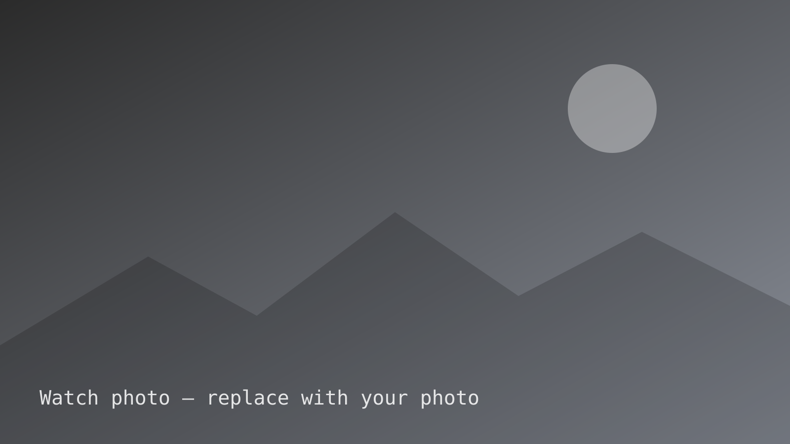

The case for 36mm
Sample post. Why the "small" size is the right size for most wrists, and why the spec sheet number that matters isn't diameter.
Thoughts on watches I own, have worn for a while, or keep circling back to. I care about how a watch wears more than what it signals. No affiliate links, nothing sponsored.

Sample post. Why the "small" size is the right size for most wrists, and why the spec sheet number that matters isn't diameter.